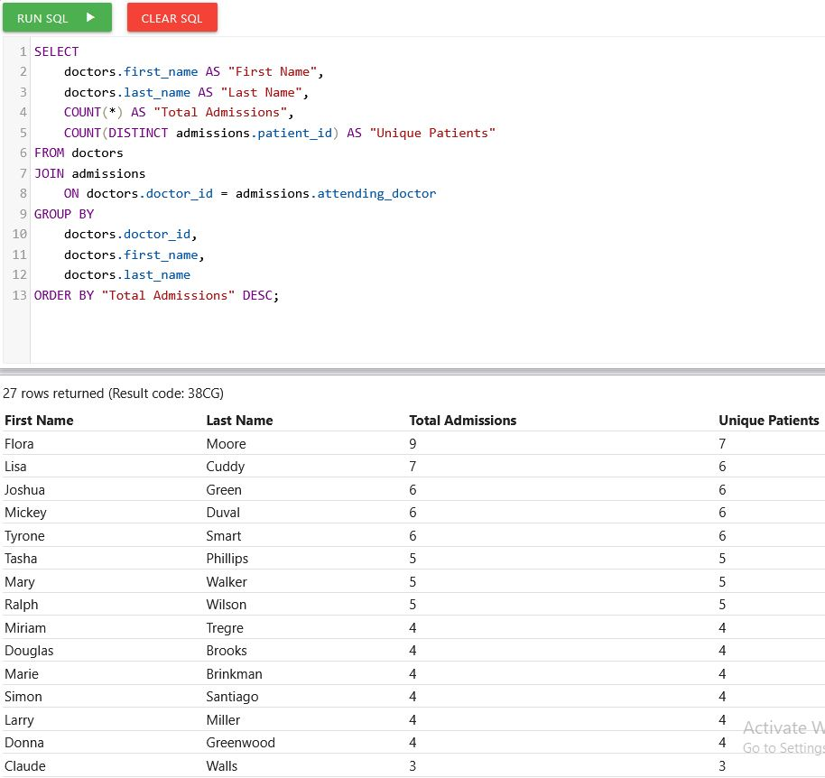
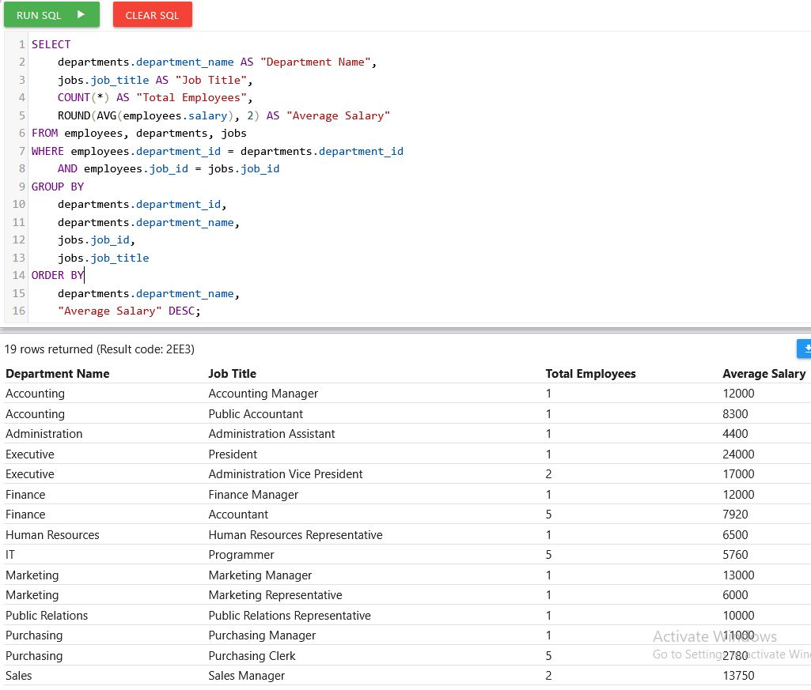

SQL Queries
Doctor admissions

I wanted to see which doctors had the most admissions and how many different patients they treated. I used JOIN to connect the doctors and admissions tables using the doctor ID. I counted all admissions and used DISTINCT to count each patient once for each doctor, even if they were admitted more than once. I sorted the results so the doctors with the most admissions show up first.
Salaries by department and job

For this query, I wanted to compare salaries for different jobs within each department. I used an implicit join to connect the employees, departments, and jobs tables by matching their IDs in WHERE. I grouped employees by department and job title to show how many people are in each group and their average salary. I rounded the averages to two decimal places and listed departments alphabetically, with the highest average salaries first within each department.